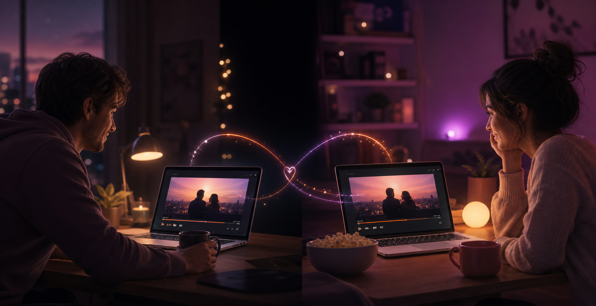
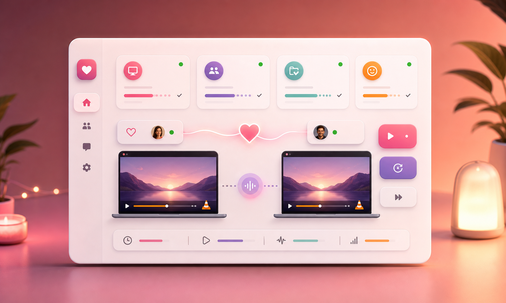
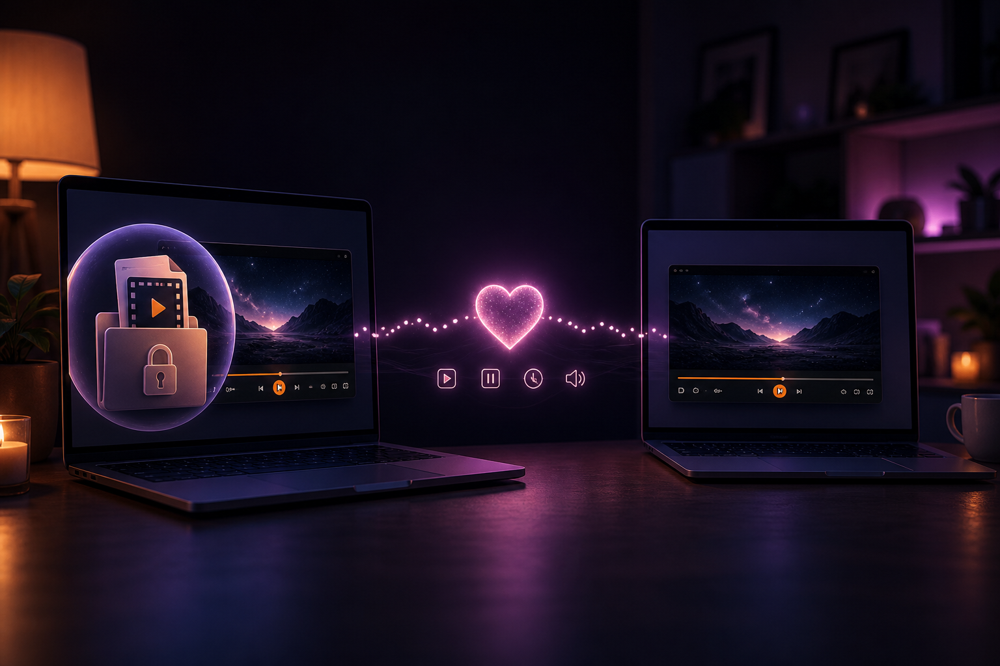

Turn a local video into a quiet movie date without screen sharing.
VLC watch party for local videos
Movie night together, even when you are apart.
togetherly keeps VLC in sync for couples and friends watching the same local video. Create a room, share the code, and play, pause, or seek together without uploading your movie.
- No upload
- Your video stays on your computer.
- VLC-first
- Built for people who already use local files.
- Two-person rooms
- Simple private rooms for couples or friends.

Keep episodes and subtitles local while both timelines stay together.
Share a code, open VLC, and let togetherly handle playback changes.
Built around the real problem
Less troubleshooting, more watching.
Watch-party tools often fail because people cannot tell what is connected, who moved the timeline, or whether both sides opened the same file. togetherly keeps the room state visible.

Room health at a glance
Know what is working before the movie starts.
See VLC readiness, partner connection, same-video checks, ready state, and manual resync controls without digging through settings.
Sync VLC playback
Play, pause, and timeline seeking are shared between both people in the room.
Clear room status
See partner connection, VLC connection, sync activity, and recent actions in plain language.
Simple room codes
Create a room, share a short code, and start watching without accounts or media servers.
Tray-friendly
Keep the app out of the way while VLC plays, then quit cleanly from the system tray.
Auto updates
Future releases can be checked from inside the app, with automatic checks every few days.
Local-file privacy
The relay only needs small room metadata. It does not receive the video file or a screen stream.
How it works
A room, a code, and the same video in VLC.
Open the same video
Both people open the same local movie, episode, or anime file in VLC Media Player.
Create or join
One person creates a togetherly room. The other person joins with the short room code.
Watch in sync
When either person plays, pauses, or seeks, togetherly mirrors the action for the partner.
Private by design
No video upload. No screen sharing. No streaming login.
togetherly is designed for people who already have the video file locally. The app talks to VLC on your own computer and sends only small room and sync metadata through the relay server.

- Your movie stays local. togetherly does not upload, host, or re-stream your video.
- The relay sees room metadata. Room join, ready state, play, pause, seek, timestamp, filename/title, and duration metadata are relayed to your partner.
- No streaming-service workarounds. The app avoids DRM, browser black screens, account sharing, and regional catalog issues.
Download
Get the latest Windows build.
Download the portable EXE from GitHub Releases. Windows may show a SmartScreen warning while the app is new and unsigned.
FAQ
Questions before movie night.
Do both people need the same video file?
Yes. togetherly syncs VLC playback controls. It does not send the video itself.
Does togetherly work with Netflix, Prime Video, or Disney+?
No. togetherly is intentionally VLC-first for local video files, which avoids DRM, ads, login, and black-screen issues.
Does it upload my movie?
No. Your video stays on your computer. The server only relays small room metadata such as playback events, ready state, filename/title, and duration between people in the same room.
What do I need installed?
You need Windows, VLC Media Player, togetherly, and an internet connection for the room relay.
Why does Windows warn me when I open it?
New unsigned Windows apps can trigger SmartScreen warnings. A signed installer is a future trust improvement for public distribution.